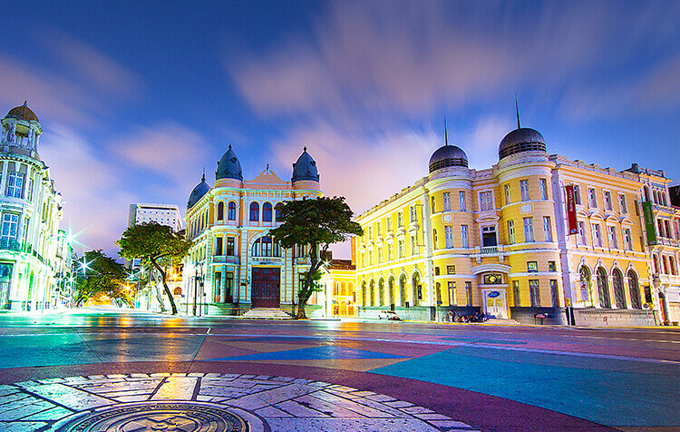

Sobre o Marco Zero
O Marco Zero é um ponto turístico icônico na cidade do Recife, localizado no bairro do Recife Antigo. Ele marca o início das contagens das distâncias das rodovias federais que partem da cidade. Além disso, é um local de referência histórica e cultural, com uma vista deslumbrante para o mar e para o centro histórico da cidade.
Galeria de Fotos
Uma vista panorâmica do Marco Zero.

O Marco Zero à noite, iluminado.
Como Chegar
O Marco Zero fica no coração do Recife Antigo e é facilmente acessível de carro, ônibus ou táxi. Também é uma área popular para caminhadas e passeios de bicicleta. Além disso, é próximo a diversos pontos turísticos e restaurantes da região.